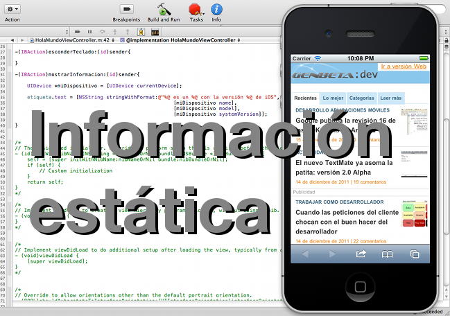

|  |

Hace poco vimos uno de los aspectos más difíciles de la iniciación a la programación en iOS, la adaptación a la peculiar sintaxis de Objective-C. Una vez habituados a los pasos de mensajes en lugar de las llamadas de funciones, el siguiente paso es olvidarnos de cuando trabajábamos para dispositivos fijos, con una pantalla horizontal y unos periféricos ya supuestos. Ahora tenemos en nuestras manos un dispositivo móvil, cuyas características cambiarán dependiendo de dónde y en qué posición se encuentre, y cuyas capacidades pueden variar sustancialmente dependiendo de si se trata de un iPod, un iPhone o un iPad.
Así pues, nos interesa conocer ciertos datos sobre el dispositivo antes de asumir su tamaño, su orientación o incluso la versión de iOS instalada, ya que esto nos puede impedir utilizar ciertas funciones que hayan sido añadidas en las últimas versiones del sistema operativo móvil de Apple.
¿Por qué se conoce a este tipo de datos como estáticos, si pueden variar? Desde la versión de iOS, que puede incrementarse cada ciertos meses, hasta la orientación del móvil, que cambiará con sólo hacer un giro de muñeca, pasando por el nombre del dispositivo, que puede modificarse cada vez que se desee desde iTunes. Sin embargo, como decíamos, todos estos campos se consideran estáticos ya que todos ellos se pueden consultar en un momento determinado, sin dependencia de datos anteriores y sabiendo que vamos a obtener un resultado concreto. Esto los diferencia de otros campos que conoceremos como dinámicos, tales como la geolocalización o la aceleración, y que veremos en un artículo futuro.
Todos los datos estáticos que necesitemos conocer se encuentran definidos en el fichero UIDevice.h, que deberemos importar allá donde queramos consultarlo. Para poder acceder a dichos campos, habrá que instanciar un objeto que representará a nuestro dispositivo:
UIDevice *miDispositivo = [UIDevice currentDevice];
A partir de ahí, ya podremos consultar al objeto miDispositivo acerca de sus propiedades. Por ejemplo, con el este código a continuación yo obtendría el siguiente resultado:
NSLog(@"%@ es un %@ con la versión %@ de iOS", [miDispositivo name], [miDispositivo model], [miDispositivo systemVersion]);
iJohnbo es un iPhone con la versión 5.0.1 de iOS
Entre los datos identificativos más importantes podemos destacar:
name, nombre dado al dispositivo por su usuario.model, tipo de dispositivo que se está utilizando: iPhone, iPod touch o iPad.systemVersion, versión actual del sistema operativo que se está ejecutando.uniqueIdentifier, identificador único del dispositivo. A partir de iOS 5, se desaconseja el uso de esta propiedad y se recomienda que cada aplicación genere su propio identificador único, relativo únicamente a dicha aplicación e independiente del resto.Estas dos propiedades, presentes a partir de iOS 3.0, tiene en común la particularidad de que pueden estar desactivadas, por lo que antes de usarlas conviene repasar los valores de los booleanos batteryMonitoringEnabled y proximityMonitoringEnabled. Sólo en el caso de que su valor sea positivo podremos fiarnos de lo que leamos en las otras propiedades.
El valor de proximityState también es un booleano, que valdrá verdadero cuando el usuario se encuentre cerca del sensor y falso en caso contrario. Este valor nos puede ser útil a la hora de apagar la pantalla para reducir el consumo cuando el usuario se acerque el móvil a la oreja, por ejemplo.
En cuanto a la batería, nos ofrece dos atributos de lectura: batteryState, que nos indicará si el aparato se encuentra desenchufado, cargándose o cargado por completo, lo cual nos será útil a la hora de decidir si realizar o no tareas muy costosas en energía, y batteryLevel, que nos devolverá un número comprendido entre 0 y 1 indicando el porcentaje restante de batería que nos queda.
La orientación de la pantalla es útil en todo de tipo de aplicaciones, ya que será la que nos indique si tiene sentido que mostremos la información en formato vertical o apaisado, por ejemplo. Una única propiedad, orientation, nos devolverá uno de los siguientes valores:
UIDeviceOrientationUnknown, posición desconocida. Este valor sólo sirve para poder devolver un dato estático en un tiempo mínimo, y supuestamente podría aparecer cuando “mareemos” mucho al dispositivo.UIDeviceOrientationPortrait, orientación vertical, la más habitual.UIDeviceOrientationPortraitUpsideDown, orientación vertical, pero con el botón en la parte superior.UIDeviceOrientationLandscapeLeft, orientación horizontal, con el botón principal en la parte izquierda.UIDeviceOrientationLandscapeRight, igual que el anterior, con el botón a la derecha.UIDeviceOrientationFaceUp, con la pantalla boca arriba.UIDeviceOrientationFaceDown, con la pantalla boca abajo.Sin embargo, dado que la orientación puede cambiar en todo momento, y sería bastante costoso tener que estar preguntando todo el rato al dispositivo hacia dónde está mirando, existe la posibilidad de generar notificaciones en el momento que se produzca un cambio, con tan solo llamar a beginGeneratingDeviceOrientationNotifications.
Más información | Referencia de la clase UIDevice en developers.apple.com
| |